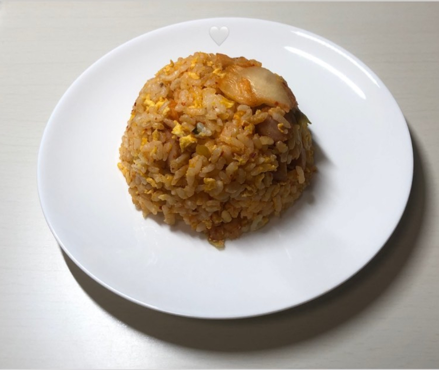

○材料（2人分）
○作り方
- ①ウインナーを1㎝幅に切ります。
- ②卵をときます。その際、マヨネーズも入れます。
- ③サラダ油を引いて、ウインナーを中火で炒めます。
- ④少し焦げ目がついてきたらウインナーを端に寄せ、卵を入れます。この時、ほぐしながら炒めてください。
- ⑤卵が半熟のうちに、ご飯を入れて混ぜ合わせます。
- ⑥全体が混ざったらキムチを投入し、弱火で炒めます。
- ⑦仕上げに塩・こしょうをまぶして完成です。
○ポイント
- ★卵をとくときは、白身が少し残るくらいにすると良いです。ときすぎると卵のこしがなくなり、食感や見た目が悪くなります。
- ★卵にマヨネーズを加えることで、ふわふわな卵に仕上がります。
○最後に
キムチ炒飯は、材料も少ないので手軽に・簡単に作ることができます。仕上げにスライスチーズをのせたり、納豆を混ぜたりするのもありかもしれません！
また、キムチには乳酸菌・ビタミンB群・カプサイシンが豊富です。
乳酸菌による便秘解消効果やビタミンB群の代謝促進、カプサイシンによる脂肪燃焼効果など、体に嬉しい成分がたくさん含まれています。
食感もシャキシャキしていて、食べ応えのある逸品です！皆さんもぜひ、作ってみてください。